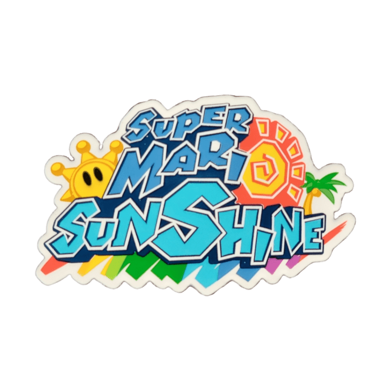

Galaga is een klassiek ruimte-schietspel dat in 1981 werd uitgebracht.
Spelers besturen een ruimteschip dat vijandelijke aliens moet bestrijden
terwijl ze naar beneden vallen. Het doel is om zoveel mogelijk punten te
scoren door vijanden te vernietigen en hun aanvallen te ontwijken. Galaga
introduceert strategische gameplay-elementen, zoals het kunnen “capturen”
van het eigen schip om extra vuurkracht te krijgen. Het spel is een vervolg
op het eerdere spel Galaxian en blijft een favoriet in arcadehallen.
Pac-Man
Pac-Man is een iconisch arcade-spel dat in 1980 werd uitgebracht.
Het spel draait om het besturen van Pac-Man, een gele cirkelvormige figuur die door een doolhof beweegt.
Het doel is om alle stippen (pellets) te verzamelen terwijl je spookjes ontwijkt die je willen vangen.
Het spel is beroemd om zijn eenvoudige maar verslavende gameplay en heeft verschillende vervolg- en spin-off games geïnspireerd.
Mario

Super Mario Sunshine is een platformgame uitgebracht voor de Nintendo GameCube in 2002.
Spelers besturen Mario terwijl hij op het tropische eiland Isle Delfino is,
waar hij de schone omgeving moet herstellen van een mysterieuze vervuiling. Mario gebruikt een waterpistool, genaamd FLUDD, om vijanden te bestrijden en obstakels te overwinnen.
Het spel staat bekend om zijn kleurrijke graphics, innovatieve gameplay en de introductie van nieuwe mechanieken voor de Mario-serie.